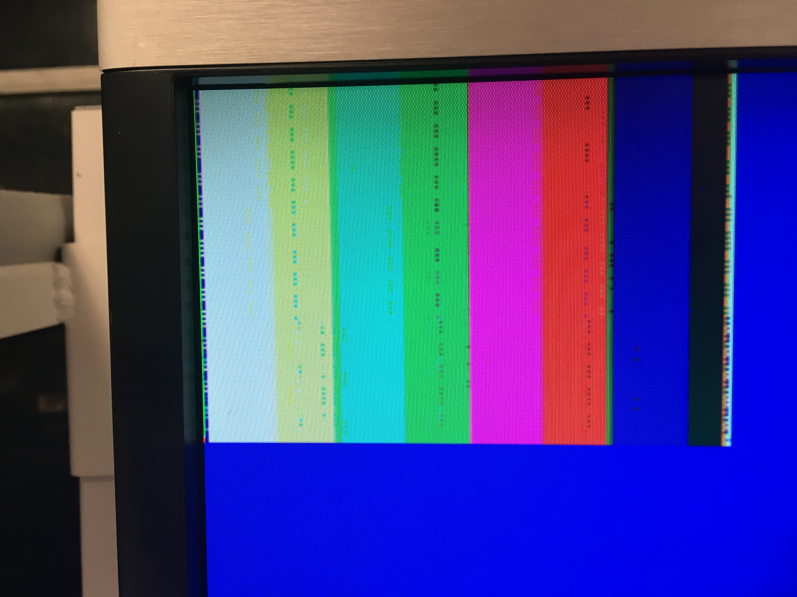

Objectives
• Arduino-Camera Communication (writing the correct registers)• Arduino FPGA communication (communication, treasure/no treasure, and color)
• Displaying M9K block on screen (an image)
• Downsampling and storing M9K buffer
• Displaying Color Bar
• Color detection
Materials
• FPGA, DE0-NANO• OV7670 Camera
• VGA Adapter
PLL
The different devices involved in camera communication (camera, VGA module, RAM read and write capability) need clock to be run. To ensure the different clocks remain in phase (no skew), we set up a Phase-Locked Loop (PLL) from the FPGA’s CLOCK_50 via the Altera IP in Quartus. With this method, we set up three clock lines, each operating at different frequencies:
• c0_sig, with a frequency of 24.0 MHz• c1_sig, with a frequency of 25.0 MHz
• c2_sig, with a frequency of 50.0 MHz
We could then implement the above PLL by instantiating it in the general Verilog file.
Team Arduino
Goals
• Wire the camera to the Arduino • Set up its registers • Establish communication between the camera and FPGA to read treasure dataBefore beginning the wiring, we first made sure to disable the internal pull-up resistors contained in the Arduino’s I2C interface. If we failed to disable these pull-ups, input signals that set up our camera would be pulled to 5V, while our camera requires 3.3V. Accordingly, this would result in damage to our camera. We then used 10k Ohm resistors to add the pull ups required for the SDA and SCL lines to the 3.3V power rail. We also used the PLL from the first part to make a 24 MHz clock to control the camera. The connections between the Arduino, FPGA and Camera are shown below:

The following registers were changed below:
• COM7: Bit[7] = 1 - resets the registers | Bit[3:2] = 11 - set the output format [For the color bar: Bit[1] = 1] • CLKRC: Bit[7:6] = 11 - sets the internal clock prescaler to determine the frequency of the internal clock based on the frequency of the input clock • COM3: Bit[3]: 1 - enables scaling, also dependent on COM7 and COM14 • COM15: Bit[7:4] = 1101 - Bit[7:6] set the output range of the data and Bit[5:4] set the RGB to RGB 565, which is dependent on RGB444. • COM17: 0 for the entire thing to turn off, to turn on color bar test: Bit[3] = 1 • COM9: Bit[0] = 1 - Freezes AGC/AEC, helps with the camera output stabilizationFrom there, we just ran the set_color_matrix() function and we were able to read and identify colors with this setup. The camera’s I2C address was also defined at 0x21.
Team FPGA
Setup
Once we successfully set up our PLL, we declared wires for each of our clocks in the DE0_NANO. These clocks will be used to drive the VGA_DRIVER, M9K_RAM, and IMAGE_PROCESSOR modules.
Buffer Reader
After setting up the clocks, we created a test pattern to display to the M9K block. To do so, whenever we had PIXEL_X and PIXEL_Y within the screen bounds, we set W_EN to high to display our pattern on the screen. Our test pattern consists of three vertical blocks of different colors. To do this, we increment the pixels by the x-coordinate one by one, coloring in each time, and then by the y-coordinate when the x-coordinate reaches the SCREEN_WIDTH. We do this until the y-coordinate reaches the SCREEN_HEIGHT. To specifically do 3 blocks, we divide the SCREEN_WIDTH into 3 using conditional statements and color in the appropriate pixels with red, green, and blue.
Downsampler
For our color resolution we decided to use RGB332. To convert RGB565 to RGB 332, we took the 3 most significant bits of read, 3 of green, and 3 of blue, but because the OV7670 Camera can only output 8 bits of a pixel at a time, we need to extract pixel color data over two clock cycles.
We kept track of which clock cycle we are on, we created a register called ‘cycle’ with value 1 if we are reading from the first byte, or 0 if we are reading from the second byte. If we are reading from the camera input on the first cycle, we set pixel_data_RGB332[1:0] to the GPIO pins corressponding to the MSB of the blue bits. If we are
reading from the camera input on the second cycle, we set pixel_data_RGB332[7:5] to the three MSB of the red bits, and pixel_data_RGB332[4:2] to the three MSB of the green bits.
These values are set only when HREF, whose posedge indicates the start of a horizontal line of pixels, is high. Once pixel_data_RGB is set after the second cycle, W_EN was set to 1, X_ADDR was incremented by 1, and pixel_data_RGB332 is then sent to the M9K_RAM module which will output the image onto the screen, and also send an output to the IMAGE_PROCESSOR module to determine what the color is.
When HREF hits the negative edge and the value of HREF changes from 1 to 0, we set the X_ADDR back to 0, and increment Y_ADDR by 1 to start a new row of pixels. When VSYNC, which indicates the end of a frame hits the positive edge, and the value of VSYNC changes from 0 to 1, then we reset X_ADDR and Y_ADDR for we have reached the end of a frame and must start filling in pixels from the beginning.
Our downsampler code:
Once we’ve written the downsampler code, and set the registers in the arduino code to display a color bar, we were able to display the color bar test as shown below.
We then set the registers to send the camera output, and successfully was able to display camera output onto the screen.
Image Processing
Our image processing module looks through one pixel of a frame at a time and determines the color of that pixel.
As the modules goes through all the pixels in the frame, it tallies the number of red, blue and other color pixels.
At the end of the frame, indicated by the positive edge of VSYNC, if more pixels are red than blue, and there are more red pixels than half the number of pixels in the frame (16’d17000), then the module determines the frame to be mostly red.
The same process is used to determine if a frame is mostly blue, or no color.
Once a color for a frame has been determined, our module will output a 2 bit value.
If the value is 2’b01, the module detected that the frame is mostly blue, if it is 2’b10, the frame is red, and if is 2’b00, then no color was detected.
These 2 bit values are then outputted from the FPGA using GPIO pins.
Integration
To have the arduino print out the color the camera was seeing, we hooked up the image processor module to GPIO pins on the FPGA, and used those pins as an input to the arduino. As a result, the Arduino could take the result of the image processor module and determine whether the image is mostly red, mostly blue, or neither.
As shown in the code above, if the variable MSB is high (and LSB low), we know the camera saw a mostly red image. If the variable LSB is high (and MSB low), then we know the camera detected a blue image. If neither LSB or MSB are high, we know the camera detected no image.
Below is a video of our code detecting colors:
Thank you team 5 for having their code public on their github repository. A lot of the FPGA code was taken from their repository.